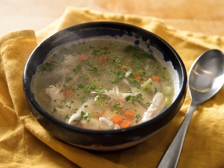

Chicken soup

Description
Classic chicken soup is exactly what you need, whether to soothe a cold or just to warm your bones. It should be flavorful yet clean, and satisfying without being overly rich or heavy. In its most basic form, it's as simple as throwing a chicken into a pot with vegetables.
But keeping it easy doesn't mean we can't take a few extra steps to make it as delicious as possible, and this recipe does just that.
Ingredients
- 1 (4-pound; 1.8kg) whole chicken
- 3 quarts (2.8L) cold or room-temperature homemade chicken stock or store-bought low-sodium chicken broth
- 6 medium cloves garlic
- 2 sprigs fresh thyme
- 1 bay leaf
- 1 large carrot (8 ounces; 230g), diced
- 1 medium turnip (7 ounces; 200g), peeled and diced
- 1 medium yellow onion (9 ounces; 250g) or large leek (white and light-green parts only), diced
- 1 large parsnip (10 ounces; 285g), peeled and diced
- 2 medium ribs celery (5 ounces; 150g), diced
- Kosher salt and freshly ground black pepper
- Minced fresh dill, flat-leaf parsley, or other fresh herbs, to finish
Steps
- Using a sharp knife, cut chicken breasts from breastbone and detach chicken legs from carcass. In a large soup pot or Dutch oven, cover chicken breasts, legs, and carcass with stock. Add garlic, thyme, and bay leaf.
- Heat stock over medium-high heat until temperature reaches between 150 and 160°F (66 and 71°C) on an instant-read thermometer; adjust heat to maintain stock temperature in the 150–160°F range. It's okay if the temperature bounces around a little, but try to keep it above 150 and below 170°F (77°C). Cook until thickest part of chicken breasts registers 150°F on an instant-read thermometer, about 1 hour. Remove chicken breasts and set aside.
- Bring soup to a simmer and continue cooking for 1 hour longer, skimming as needed. Discard thyme sprigs and bay leaf. Remove all chicken from pot. Pull meat from bones, shredding it into bite-size pieces; discard skin and bones. If broth is cloudy, you can strain it through a fine-mesh strainer to clarify it.
- Return all chicken to pot except breast meat and return to a simmer. Add diced carrot, turnip, onion (or leek), parsnip, and celery and cook until just tender, about 10 minutes. Season with salt and pepper. Add minced fresh herbs and remove from heat. Dice chicken breasts and stir into soup along with any accumulated juices. Serve hot.
Back